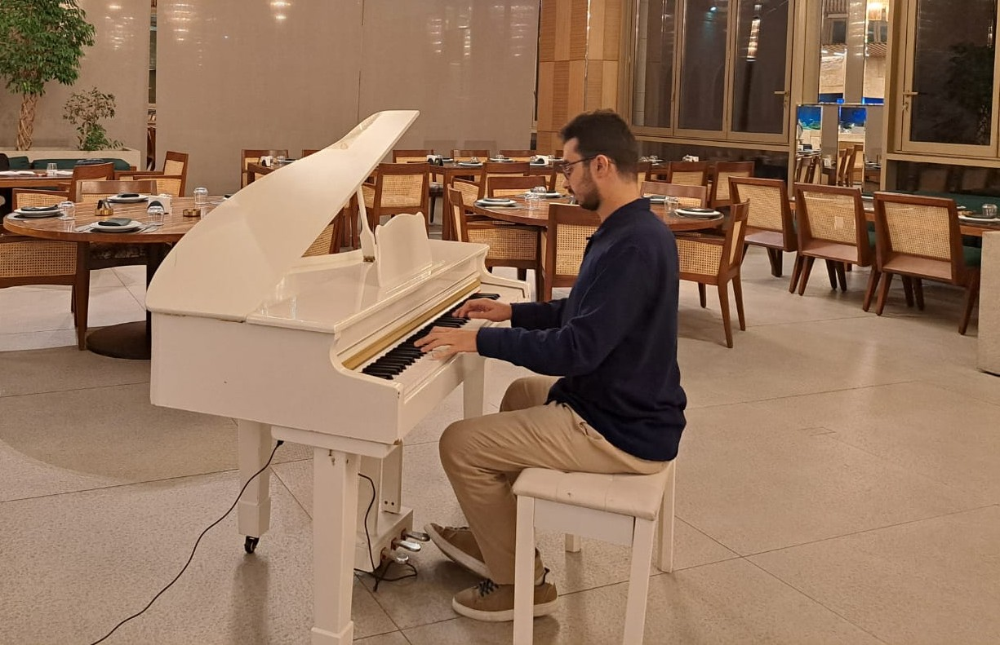

“Applying elite classical speed and discipline to the raw power of Rock and the rich modal tapestries of Oriental fusion.”

Ghadi at the keys of the majestic white grand piano
Born in Lebanon, Fakiha, my musical current took root at the age of 8. For nine intensive years, I honed my artistic expression and technical command under classical guidance at the prestigious Lebanese National Higher Conservatory of Music, completing all critical academic years of study.
While my youth was dedicated to mastering complex classical phrasing and mechanical structure, my vision has evolved. Traditional recitals are behind me; my true artistic drive is focused on channeling my powerhouse conservatory technique into Rock and Oriental music.
I bring an absolute command of key independence, rapid runs, and advanced harmony to live setups—aiming to elevate synth solos, progressive rock riffs, and microtonal oriental arrangements to a virtuosic level.
Franz Liszt — Liebestraum No. 3 (Love Dream)
Navigating Liszt's famous romantic masterwork represents the absolute pinnacle of my mechanical development.
I share this performance to demonstrate the extreme hand independence, lightning-fast double cadenzas, and expressive touch that I now bring straight to modern synthesizer soundscapes and fast-tempo rock or oriental lines.
9-Year Classical Track (Ages 8–18)
Completed preparatory curriculum, classical music syntax, and performance modules before branching out to modern synthesizers.
Repurposing absolute pitch accuracy, intricate sight-reading capabilities, and speed mechanics to master synthesizers, Hammond organs, and oriental pitch-bending.
Active Band Member
Extensive background operating keyboards inside multiple active live bands, blending complex classical timing with the raw energy of contemporary groups.
Skilled in arranging layers, dynamic micro-adjustments during live sets, and blending seamlessly into a rhythm section.
I am actively seeking to join an established Rock or Oriental band, or team up with dedicated musicians to start a new project from scratch.
Priority Goal: Actively looking to collaborate with a professional, talented music arranger to strategically elevate new projects as soon as possible.
System Action
Email address copied to clipboard!